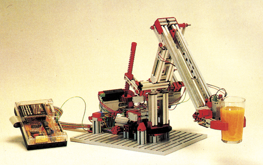
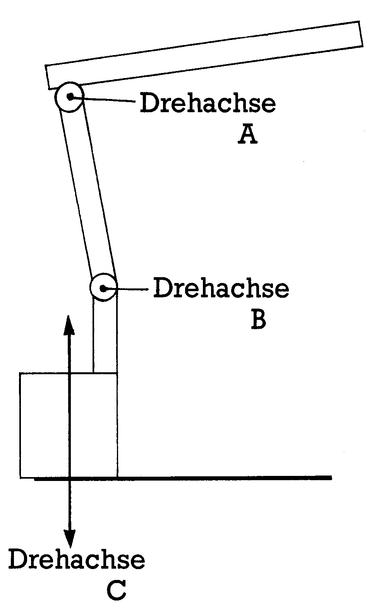
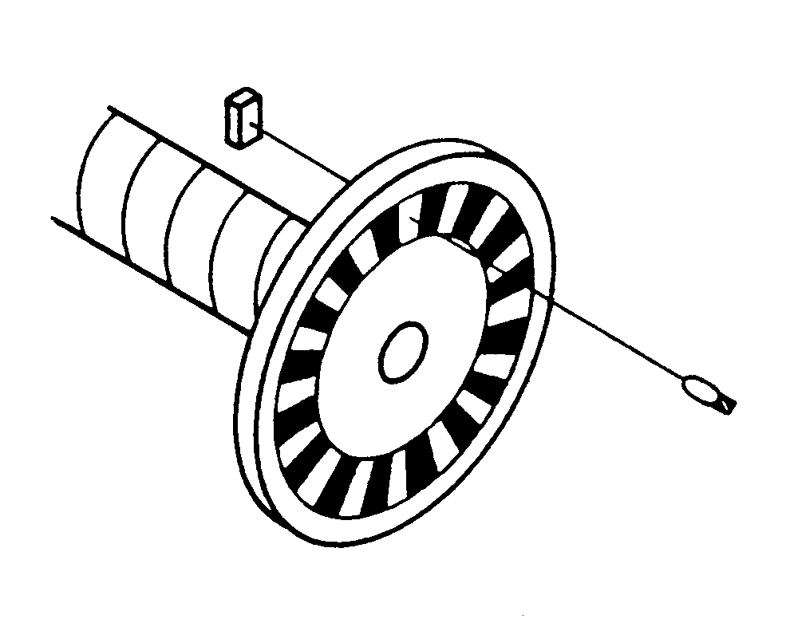
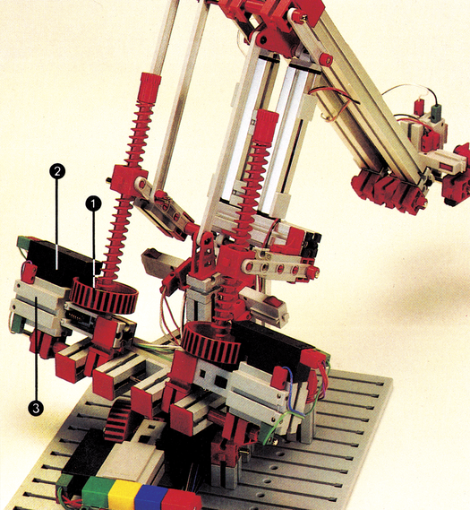
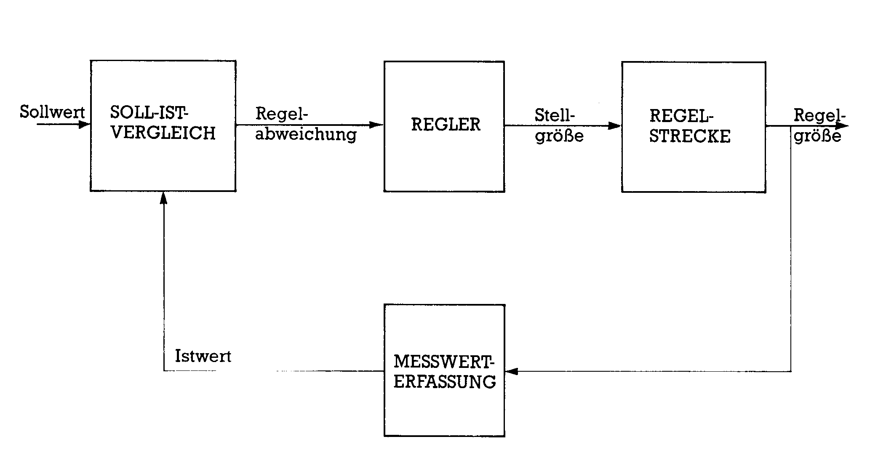

Der Computer greift um sich
Lampen blinken, jede Menge Züge fahren auf der Eisenbahnanlage, ohne daß ein Chaos entsteht. Der Roboter arbeitet unermüdlich und Ihr Computer führt die Regie. All dies können Sie nur verwirklichen, indem Sie mit Ihrem Computer messen — steuern — regeln.
Der Wunsch nach Robotern ist fast so alt wie die Menschheit selbst.
Schon im antiken Griechenland baute man mechanische Tempeldiener, die bestimmte Bewegungen ausführen konnten — gesteuert durch das Gewicht von Sand, der aus großen Sanduhren herabrieselte. Wie Sie merken, existiert die Problematik »Messen — Steuern — Regeln« wesentlich länger als man annehmen könnte. Die moderne Technik eröffnet uns heute natürlich ganz andere Anwendungsbereiche. Roboter schweißen Autos zusammen, lackieren sie oder wechseln Werkstücke an Maschinen. Dabei sind wir auf Sand für die Steuerung nicht mehr angewiesen. Der Computer übernimmt heute diese wichtige Funktion und sorgt dafür, daß die jeweiligen Aufgaben schnell, ausdauernd und mit enormer Präzision durchgeführt werden. Daher kommt dem Gebiet Messen — Steuern — Regeln heute eine besondere Bedeutung zu. In Ihrem C 64 schlummern übrigens auch dafür enorme Fähigkeiten. Wie man hört, soll der C 64 sogar in einem großen fränkischen Kraftwerk als unermüdlicher Meßdiener arbeiten. Aber wenden wir uns erst einmal den Grundlagen zu.
Regeln leicht gemacht
Sie sitzen wieder einmal vor Ihrem Computer und wollen schnell noch ein Programm fertigstellen. Inzwischen hat der Uhrzeiger aber schon beachtliche Wege zurückgelegt und die in der Nähe stehende Kaffeemaschine leistete einen entscheidenden Beitrag dazu, Sie wachzuhalten. Und schon sind Sie wieder mit dem Problem Messen — Steuern — Regeln konfrontiert, denn in einer Kaffeemaschine wird gemessen, gesteuert und geregelt. Sie werden sich fragen: Was wird in einer Kaffeemaschine denn geregelt? Wir wollen es Ihnen erklären.
Da kalter Kaffee ja geschmacklich nicht das Gelbe vom Ei ist, muß die dunkelbraune Flüssigkeit heiß gehalten werden. Solange, bis auch der letzte Tropfen aus dem Glasbehälter in die Tasse gegossen wird. Eine eingebaute Heizplatte übernimmt diese Aufgabe. Wenn Sie diese einschalten, haben Sie übrigens schon einen Steuervorgang vollzogen. Aber zurück zum Kaffee, denn der soll nicht kochen und in kürzester Zeit verdampfen, sondern eben nur heiß bleiben. Also muß irgendwann die Heizung ab-5 geschaltet werden (übrigens wieder ein Steuervorgang). Deshalb wird die Temperatur der Heizplatte gemessen. Doch kommen wir nun zu der entscheidenden Verknüpfung vom Messen und Steuern, die für eine Regelung notwendig ist. Die gemessene Temperatur wird mit einem Sollwert (Kaffee kocht fast) verglichen. Ist bei unserer Kaffeemaschine die Solltemperatur erreicht, wird die Heizung abgeschaltet. Die Kaffeekanne nebst ihrem Inhalt ist jedoch permanent bestrebt, Wärme an die Umgebung abzugeben. Das bedeutet, die Temperatur des Kaffees (und damit auch der Heizplatte) sinkt. Es tritt eine Störung ein, der entgegengewirkt werden muß. Deshalb wird die Heizung wieder eingeschaltet, nachdem die Solltemperatur um einige Grade unterschritten ist. Auf diese Weise ist Ihr Kaffee weder zu heiß noch zu kalt.
Einen typischen Regelfall haben Sie hier vor sich, denn die Aufgabe einer Regelung besteht darin, eine bestimmte physikalische Größe (Regelgröße) auf einen vorgegebenen Sollwert zu bringen und dort zu halten. Störungen, die dabei auftreten, werden durch die Regelung ausgeglichen. In dem beschriebenen Fall ist diese Regelgröße die Temperatur — und zwar die Temperatur des Kaffees.
Aber verlassen wir nun das Reich der dunklen Bohnen und wenden uns wieder dem Computer zu.
Jetzt regelt der Computer
Der Computer ist hervorragend dafür geeignet, Regelaufgaben zu übernehmen. Durch die schnellen Arbeitsroutinen kann er in kürzester Abfolge Sollwerte mit Istwerten (Meßwerten) vergleichen und entsprechende Maßnahmen veranlassen.
Unsere moderne Technik hat uns den künstlichen Hilfsarbeiter beschert, den Roboter. Seine Bewegungen werden von Computern gesteuert, überwacht und geregelt. An einem kleinen Bruder der imponierenden Industrieroboter, der auch auf Ihren Schreibtisch paßt, wollen wir Ihnen zeigen, wie sie funktionieren.
In Bild 1 sehen Sie den von Fischertechnik entwickelten Roboter mit Interface für den C 64. Er stellt sich Ihnen auch gleich mit einem Glas in der Hand oder besser gesagt, im Greifer, vor. Sie sehen aber nicht, wie sich der Roboter bewegt — deshalb ein paar Informationen darüber.

Vielen Robotern diente der menschliche Arm als Vorbild. Auch der Roboter von Fischertechnik besteht aus einem Ober- und einem Unterarm. Beide drehen sich um je eine Achse. Im Bild 2 finden Sie die beiden Achsen — bezeichnet mit Drehachse A und B. Damit der Roboter jeden Punkt seiner Umgebung anfahren kann, muß eine horizontale Drehung ebenfalls möglich sein (Bild 2, Achse C). Man spricht deshalb bei diesem Roboter von einer dreiachsigen Bewegung, für die auch drei Antriebsmotoren notwendig sind. Einmal abgesehen von den mechanischen Grenzen, kann der Roboter so jeden beliebigen Punkt erreichen. Sie brauchen die einzelnen Motoren nur für eine bestimmte Zeit einzuschalten und der Roboter hat die entsprechende Position erreicht.

Doch halt! Was ist, wenn der Roboter eine große Last transportieren soll und die Motoren sich langsamer drehen? Der Zeitplan kommt durcheinander und schon legt der Roboter seine Last an der falschen Stelle ab. Auch bei Schwankungen der Betriebsspannung kann ein Fehler bei der Positionierung entstehen. Dagegen muß dringend etwas unternommen werden. Die Lösung haben Sie sicher schon geahnt. Die Bewegungen des Roboters müssen geregelt werden. Aber jetzt übernimmt der Computer diese Aufgabe.
Roboter im Einsatz
Wie Sie aus dem ersten Beispiel sicher noch wissen, ist ein Meßvorgang für eine Regelung notwendig. Was muß in diesem Fall gemessen werden? Hier sind es die vom Roboterarm zurückgelegten Wege, die zu messen sind. Wenn Sie sich nun Gedanken über ein geeignetes Meßverfahren machen, so sollten Sie beachten, daß der Computer nur digitale Werte verarbeiten kann. Das heißt, der Computer erkennt nur zwei Schaltzustände, nämlich 0 und 1. Eine Weginformation liegt aber normalerweise in analoger Form vor. Dabei ist jeder beliebige Wert möglich wie beispielsweise 3,18 oder 16,3. Eine solche Information müßte erst durch einen Analog-/Digital-Wandler umgeformt werden, wenn der Computer sie verarbeiten soll. Deshalb wurde bei unserem Roboter ein Wegmeßverfahren gewählt, das gleich einen digitalen Meßwert liefert.
In Bild 3 können Sie erkennen, wie so etwas gemacht wird. Die Antriebsspindel ist mit einer sogenannten Digitalscheibe versehen. Auf dieser befindet sich ein Raster aus hellen und dunklen Flächen. Dreht sich nun diese Scheibe, so erzeugt eine optische Abtasteinheit, die aus einer Lichtquelle und einem Fotoelement besteht, eine Impulsfolge. Damit haben wir eine digitale Weginformation, bei der ein Impuls einem bestimmten Weg entspricht. Durch Aufsummieren der Impulse erhalten Sie den zurückgelegten Weg. Diese Information kann vom Computer direkt verarbeitet werden.

Drei solcher Wegmeßsysteme befinden sich auch am Fischertechnik-Roboter. An jeder Bewegungsachse sitzt ein System. In Bild 4 finden Sie eines der Wegmeßsysteme gekennzeichnet (1 = Digitalscheibe, 2 = Meßwertgeber). Damit die Messung nicht von äußeren Lichteinflüssen gestört werden kann, verwendet Fischertechnik ein Infrarot-Meßsystem. Dabei läßt der rote Kunststoff Infrarotlicht durch.

Nachdem der Meßvorgang nun hinreichend besprochen wurde, wollen wir uns der Regelung widmen. Bild 5 zeigt das Blockschaltbild für einen Regelkreis, wie er hier vorhanden ist. Gehen wir davon aus, daß der Roboter eine neue Position anfahren soll. Ein neuer Sollwert wird also vorgegeben. Natürlich unterscheidet sich der Istwert jetzt erheblich von dem Sollwert. Daraus ergibt sich die Regelabweichung. Der Computer reagiert nun als Regeleinrichtung (Regler) und erzeugt einen Stellbefehl für die Regelstrecke. In unserem Fall bedeutet dies, daß der Motor mit der entsprechenden Bewegungsrichtung eingeschaltet wird und eine Positionsänderung des Roboters bewirkt. Die derzeitige Position (Regelgröße) wird nun wiederum gemessen und ein neuer Istwert dem Vergleicher zugeführt. Diese Vorgänge wiederholen sich in sehr kurzen Zeitabständen, bis der Istwert mit dem Sollwert übereinstimmt. Der Regler reagiert dann, indem er den Antriebsmotor ausschaltet. Sollte der Motor beispielsweise nachlaufen, so entsteht wieder eine Regelabweichung, auf die der Regler entsprechend reagiert. Auf diese Weise kann unabhängig von äußeren Störeinflüssen eine genaue Positionierung erreicht werden.

Geregelte Wege
Eine solche Regeleinrichtung existiert für jede der drei Bewegungsachsen. Im Bild 4 sehen Sie auch die drei Meßeinrichtungen. Interessant ist, daß alle drei Regelvorgänge quasi parallel ablaufen können. Durch ein Maschinenprogramm sind die Arbeitsroutinen des Computers entsprechend schnell.
Die notwendigen Steuervorgänge und Istwerterfassungen erfolgen über den Port B des User-Ports.
Dies war nur ein Beispiel dafür, wie sich der C 64 zum Messen — Steuern — Regeln einsetzen läßt. Ebenso können Sie mit Ihrem Computer die Aquarientemperatur regeln, Blumen bewässern oder die Heizungsanlage regeln. Aber wir wollen Ihrer Fantasie keine Grenzen setzen.
(kn)Info: Fischerwerke, Arthur Fischer GmbH & Co. KG, 7244 Tumlingen/Waldachtal